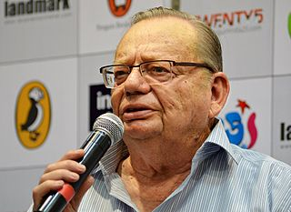
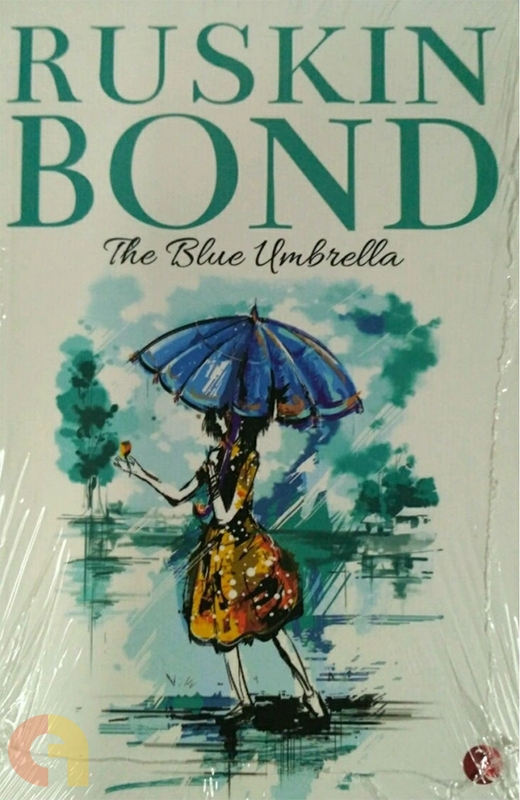

The Blue Umbrella is a 1980 Indian novel written by Ruskin Bond. It was adapted into 2005 Hindi film by the same name, directed by Vishal Bhardwaj, which later won the National Film Award for Best Children's Film. In 2012, the novel was adapted into a comic by Amar Chitra Katha publications, titled, The Blue Umbrella – Stories by Ruskin Bond, and included another story, Angry River. This story appeared in Bond's collection of short stories, Children's Omnibus.
About the Author

Ruskin Bond is an Indian author of British descent. He lives with his adopted family in Landour, Mussoorie, India. The Indian Council for Child Education has recognised his role in the growth of children's literature in India. He was awarded the Sahitya Academy Award in 1992 for Our Trees Still Grow in Dehra, his novel in English. He was awarded the Padma Shri in 1999 and the Padma Bhushan in 2014. He has written over five hundred short stories, essays and novels, including The Blue Umbrella, Funny Side Up, A Flight of Pigeons and more than 50 books for children. He has also published his autobiography: Scenes from a Writer's Life describes his formative years growing up in Anglo-India and a further autobiography, Lone Fox Dancing, was published in 2017. The Lamp is Lit is a collection of essays and episodes from his journal.
Synopsis

In a small village called Garhwal, there lived a little girl, Binya. In the village, the shopkeeper, Ram Bharosa keeps an old useless shop and sells warm Coca-Cola bottles and sweets to the school going kids. A beautiful blue umbrella has been given to Binya by some foreigners on a picnic in the hills in exchange for her leopard claw pendant. The people in her village have become very fond of her umbrella. Soon the shopkeeper becomes jealous and tries to buy it from Binya. As time passes , Ram Bharosa's feeling to get the umbrella turns in to an obsession. The school had been closed due to the arrival of the monsoon and Ram Bharosa employs a boy named Rajaram from the next village to work at the shop. When he comes to know about his master's desire to own the umbrella he makes an attempt to steal the umbrella, but Rajaram fails and gets caught, he then gives Ram Bharosa's name. Now everyone stopped coming to Ram Bharosa's shop. Ram Bharosa had got a bear necklace and he coated it with silver. However, Binya realizes her mistake that she shouldn't have shown off her umbrella as it was the cause for Ram Bharosa's suffering. Finally, at the end, Binya gives the umbrella to Ram Bharosa, who gifts her a necklace with a bear's claw. Since then, Ram Bharosa started keeping the umbrella for anyone to borrow and people again began to visit his shop.
What I learnt from the book
I feel the main theme of the story is to keep others happy by giving out things you love the most. It is tough to renounce the things we love. The book is written in a simple and lucid manner. The author's approach was way more prominent to make such ordinary characters into heroic and others found opportunities to redeem themselves as well.